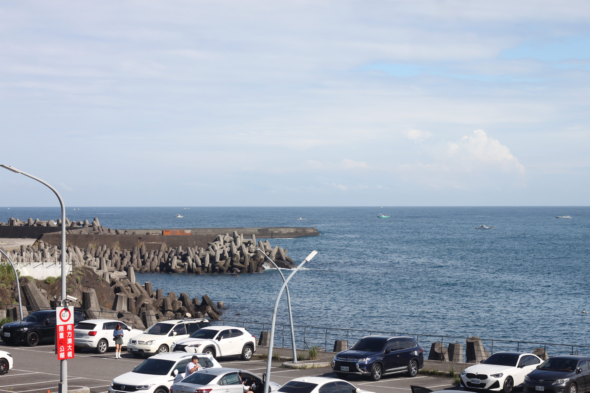
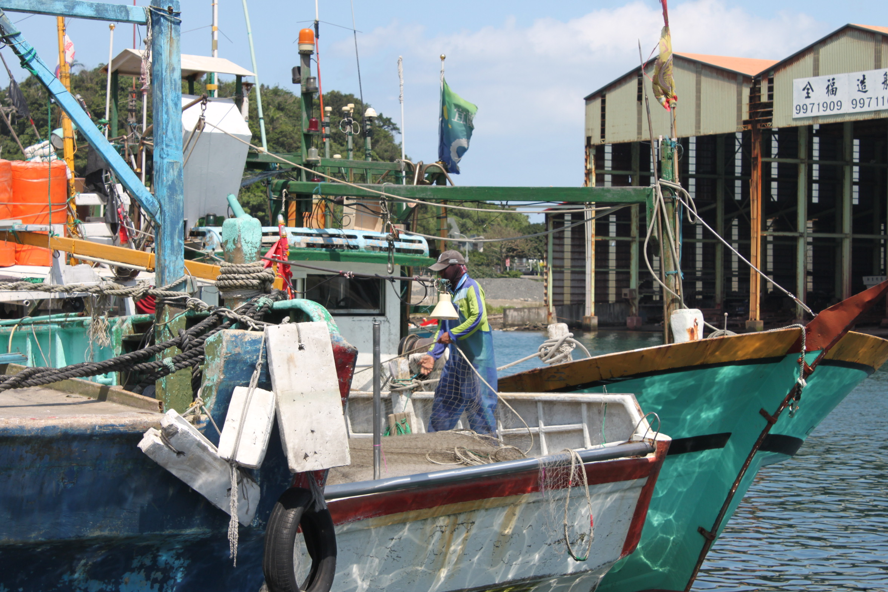
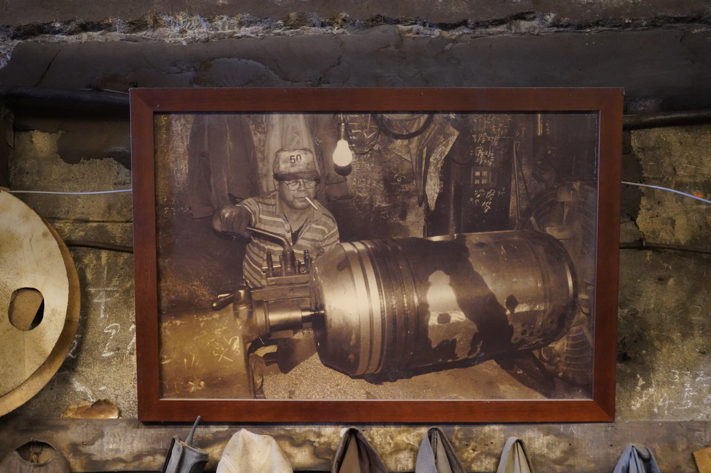

漁生
Home
Story Map
About Us
☰
漁生
The Story Of NANFANG'AO
南方澳，
一座因海而生的港口聚落。
潮起潮落之間，
寫下人與海共生的故事。

⊕
Chapter 0 港邊記憶

⊕
Chapter 1 漁民篇

⊕
Chapter 2 職人篇
⊕
Chapter 3 食物篇
✕
CHAPTER 0
港邊記憶
Subchapters
進入完整篇章閱讀
→
✕
全 篇 章 架 構
CONTENT DIRECTORY
Chapter 0 · 港邊記憶
Chapter 1 · 漁民篇
→
· 1-1 浪沫與歲月之間：一位南方澳老船長的遠洋討海人生
· 1-2 網住細碎的風浪：李阿濤在南方澳與吻仔魚共生的一輩子
· 1-3 來自異鄉的南方澳討海人:外籍漁工街訪
Chapter 2 · 職人篇
→
· 2-1 留下來的不只是機器：廖大慶與三鋼鐵工廠的故事
· 2-2 船靠岸之後：游師傅與全福造船廠的四十年
· 2-3 一艘船的誕生：陳奕霖與蘇澳港的職人日常
Chapter 3 · 食物篇
→
· 3-1 南方澳的新討海運動 : 雷震洲與海派生活
· 3-2 鯖魚的重生之路 : 大鯖魚夢工廠的轉型實驗
· 3-3 魚市場